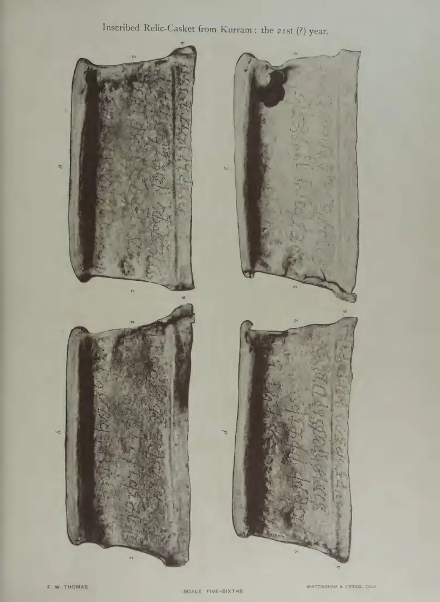
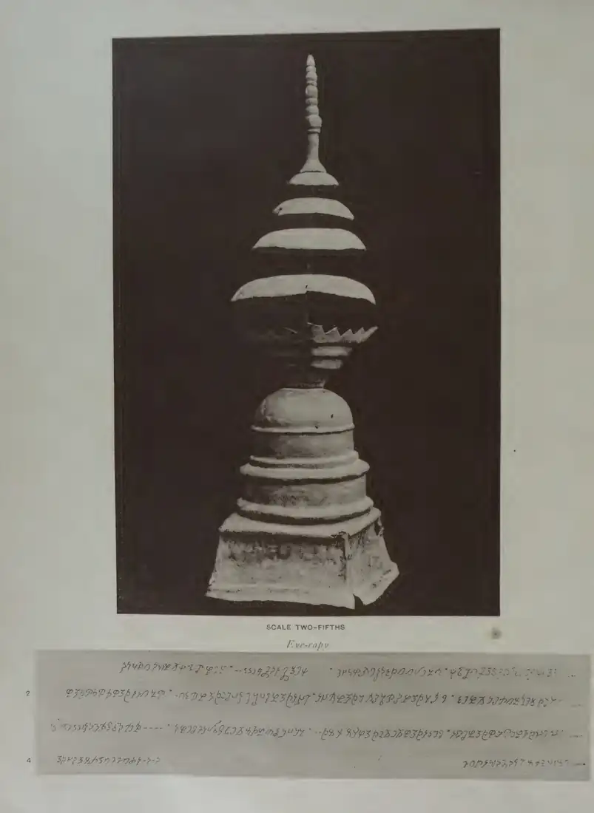

An inscribed relic casket from Kurram
No. 3.—AN INSCRIBED RELIC CASKET FROM KURRAM.
This casket was brought to my notice in the year 1917, when I was Superintendent of the Archæological Survey, Frontier Circle, Peshawar, by Khan Sahib Mian Wasi Uddin, my Assistant. On enquiry I learnt that its exact find-spot was unknown, but that it was given as a present by a villager to one of the sons of the Nawab of Landi Yarghazo, while he was Tahsildar of Kurram. The casket is now in the possession of his younger brother, a student of the Edwardes College, Peshawar, from whom I tried to acquire it for the local Museum, of which I was the ex-officio Curator; but I could not succeed until the moment of my departure from Peshawar in January, 1919.
The casket is made of copper and measures 18" in height. Its base is square and is attached to the drum by means of a fillet and grove joint. The harmikā is of the conventional shape and loosely threaded on to a central shaft, also of copper.
The casket is almost perfect in every detail and has the appearance of a miniature stūpr with its harmikā and umbrellas. (Pl. I, a.)
The relics which the casket was meant to enshrine are no longer traceable. Likewise, as I have observed already, the exact find-spot of the casket is unknown. Neither could I, owing to the unsettled state of the Kurram valley, visit the spot and obtain any local information.
The inscription on the casket consists of four lines of Kharōshṭhī script punctured, as in the case of the Kanishka casket from Shāh-ji-ki-dhēri, on the four sides of its square base. The writing covers a space of 4½" × 2" on each side and seems to be in fairly good preservation, except as regards the lowermost line on two of the sides, which, unfortunately, has disappeared altogether. (Pl. I, b, and Pl. II.)
The paleography of the record presents the same peculiarities as the silver scroll inscription from Taxila,1 the Kanishka casket from Shāh-ji-ki-dheri2 and the Mānikiāla casket.3 The letters are of the elongated and cursive variety and belong. undoubtedly, to the Kushān period.4 It is noteworthy that in the case of some of the letters in the present record, such as ka, dha, yā, śa and sa, the shape is not uniform throughout, but differs slightly in different places. This I attribute more to the carelessness of the engraver than to the transitional nature of the script at the time. This is borne out also by nearly the same symbol being used to represent ta, ra, ba and similarly of a and va.
The language is Prākrit and of the variety peculiar to the Western Punjab and the North-Western Frontier of India, which constituted the ancient kingdom of Gandhāra. Among the orthographical peculiarities may be mentioned that cha is invariably used for ta, va for pa and ga for ya. Besides, double consonants are always represented by single consouants, as in avija for avijja, prachaga for prachchaga, viñana for viññana, phusha for phassa, tusha for tanha and dukha-khaṇdusa for dukkha-khaṇdhassa.
The inscription records the enshrinement of the bodily relics (śarīra) of the Holy Śākya-muni in a shrine (gaha ?) belonging to the Sarvāstivādin sect, in the year 21 (?), on the twentieth day of the tenth month, Āśvina.5 Then follows the anuloma portion of the text of the Pratitya-samutpāda or Nidāna-Sūtra, which the Lord Buddha revealed soon after
1 A. S. R. for 1912-13, p. 18 f. and Plate; Ep. Ind., Vol. XIV, plate facing p. 295.
2 A. S. R. for 1908-9, p. 50 f.
3 Ep. Ind., Vol. XII, Plate facing p. 299.
4 J. R. A. S. 1920, pp. 193 ff.
5 [With the reading and translation as given by me below, some of these details will be modified.—F. W. T.]
his enlightenment under the Bödhi tree at Bödh-Gayā. The inscription ends with the prayer that these sacred relics, as well as the Sūtra propounded by the Lord, may be honoured by all sentient beings.
TEXT.
1 [Sam 20] 1 masa 10 Asunakasa di 20 iśe1 chhunami [khe]tre Varma-[ya]śa-putrasa [Ruu]bhumi-rañasa2 . . . . mi Ucha[rśa]na Sarva-[sti]vadana3 . . . gaha[mi] śu[bha]mi Bhagava[ta]sa Śaka-mun[i]sa
2 śarira . pradiokhadi4 Śakavuta Bhagava[ta]5 Avija-prachaga saṅkara saṅkara-prachaga viñana viñana-prachaga nama-ruva namaruva-prachaga sha[d-a]ya-[tana] sha[d-a]yatana-prachaga phasha phasha-prachaga
3 vedana vedana-prachaga tusha tusha-prachaga uvadana uvadana-prachaga bhava bhava-prachaga jati jati-pra[chaga] jara-marana-śoga-pari[bha]6va-dukhader-manasta7 uvaga[sa] . . . . kevalasa dukha-[kam]8dhasa samudae9 bhavati
4 śarira mahiphati[e]na10 sarva-satvana puyae
. . . .
. . . .
sa[rva] sa[tva]na puyae
eśa cha [pra]tichasamasa cha
TRANSLATION.
In the year 21, of the tenth month Āśvina, on the 20th day, at this moment, in the territory of Varmayaśas' son, the king of Ruubhūmi, in . . . Ucharśana (Uttarasena ?) [consecrated], in the sacred shrine of the Sarvāstivādins, the bodily relics of the divine Śākya-muni. Says the holy scion of the Śakas :—
“From Ignorance spring Impressions, from Impressions springs Consciousness, from Consciousness spring Name-and-Form, from Name-and-Form spring the Six Provinces (of the six senses), from the Six Provinces springs Contact, from Contact springs Sensation, from Sensation springs Thirst (or desire), from Thirst springs Attachment, from Attachment springs Existence, from Existence springs Birth, from Birth spring Old Age and Death, Grief, Lamentation, Suffering, Dejection and Despair. [Such is] the origin of [this] whole (or unique) Mass of suffering. [May these] relics of the Lord of the Universe [be] honoured by all sentient beings and [likewise] this summary [doctrine] of causes and effects.”
[Dr. Thomas's revised text and translation (inserting marks of vowel length).]
1 S. 21 māsa Avadūnakasa di 20 iśe chhunami Tśutra-Varmayaśa-putrasa navakammi[asa Saṅghārā]mami āchāryāna[īn] Sarvāstivādāna[īn] gaha]mi thñbammi Bhagavatasa Śaka-munisa
2 Read °rajasa. 3 Read °vadina.
4 The formation of this word does not seem to be quite clear.
5 The usual form is bhagava (nom.) or bhagavato (gen.).
6 The other versions have parideva. 7 Read °manass i.
8 Read °khān°. 9 Read samudao.
10 Read mahipatianām.
1 In the Brāhmī inscriptions of this period (cf. Lüders' List Nos. 32, 34) the corresponding expression is asmi kshune or asma kshune, while the Taxila silver scroll inscription has isa divase. [The e-mark is not seen. The etter may be read ya.—Ed.]
2 Śurīra prati(hāviti yaṭha(etha ?) utam(vuṭa[ī])) Bhagavatā avijā-prachaga sainsk(kkh ?)āra sainsk(kkh ?)āra-prachaga viñāna viñāna-prachaga nāma-rūva nāma-rūva-prachaga shaḍ-āyatana shaḍ-āyatana-prachaga phasha phasha-prachaga
3 vedanā vedanā-prachaga tasha(tassha ?) tasha(tarsha)-prachaga uvādāna [uvādāna-prachaga] bhava bhava-prachaga jāti jā[ti-prachaga] jarā-[maraṇa]-śoya-parideva-dukha-domanavi(si)-uvega sam[bhava]ti kevalasa dukha-sk(kkh ?)aṁ-dhasa samudae bhavati
4 danatidamahiphatilena (??) sarvasatvāna[ī] pūyae sarva-satvāna[ī] pūyae aya[ī]-cha paticha-samupāde
TRANSLATION.
Year 21, month Avadūnaka (Audūnaios), day 20—on this date, in the monastery of the navakarmika, son of Tśutra (kshudra)-Varmayaśas (?), in the abode of the reverend Sarvāstivādins, in a stūpa, was deposited a relic of the Holy Śākya-muni . . . . . [This casket is given by . . .] for the honouring of all beings, and also for the honouring of all beings this pratītya-samutpāda [formula] is engraved.]
NOTES.
The record is of great importance for many reasons. To begin with, the inscription says in so many words that the relics to the consecration of which it refers are those of the Buddha himself. We know of very few instances of this kind so far. Even the epigraph on the Kanishka relic casket discovered at Shāh-ji-ki-dherī, in Peshawar, fails to supply us with anything but circumstantial evidence as to the authenticity of the deposit. It follows, therefore, that the monument in which the present casket was enshrined must have been regarded originally as among the most important in the country.
Secondly, there have been discovered in India only two other inscriptions containing the text of the Nidāna-Sūtra. The one comes from the village of Gopalpur in the Gorakhpur District of the United Provinces, and the other from Kasiā, the ancient Kuśinagara, also in the same district. But, in both cases, we have only the Sanskrit recension of the Sūtra. The Gopalpur inscription is carved on both sides of one of 5 inscribed bricks which were dug out from a brick relic chamber in the centre of the Mañjrātiya mound, and coins of Wema Kadphises, Kanishka and Huvishka and one of Āyumitra are said to have been found along with the bricks. The script employed is the northern variety of the Gupta Brāhmī, and the text of the Sūtra is given as follov s1 :—
INSCRIPTION ON BRICK I.2
(Obverse.)
1 Evam mayā śrutam=ēkasmin samayē Bhagavāṇ=Chhrāvastyām viharati Jētavanē=
2 (A)nāthapiṇdaasy=ārāme tatra Bhagavān bhikshūn=āmantrayati sma dharmāpām vō bhi-
3 kshava āchayaṁ cha dēśayishyāmy=apachayaṁ cha tach=chhriṇuta [sādhu-ch=āsushva cha]
1 The text of the inscription is quoted here, because it gives a complete version of the Sūtra in Sanskrit, which even the Kasiā copper-plate does not.
2 Proc. A. S. B. for 1896, pp. 99 ff.
Plate 1 is bound after this page.
Plate 2 is bound after this page.
4 manasi kuruta bhāshishyē dharmāṇām=āchayaḥ katamaḥ yad=ut=āsmin sati=
5 daṅ bhavaty=asy=ōtpādād=idam=utpadyatē yad=ut=āvidyā-pratyayāḥ saṁskārāḥ
saṁskāra-
6 pratyayaṅ vijñānaṅ vijñāna-pratyayaṅ nāma-rūpaṅ nāma-rūpa-pratyaya(ḥ)
sparśaḥ
7 sparśa-pratyayā vēda[nā] vēdanā-pratyayā tṭishṇā tṭishṇā-pratyayam=upādānam=u-
8 pādāna-pratyayō bhavaḥ bhava-pratyayā jātir=jāti-pratyayā jarā-maraṇa-
9 śōka-paridēva-duḥkh-ādēr=(a-dō)manasy=opāyāsāḥ saṁbavā(n)ty=ēvam=asya mahatō
(Reverse.)
1 duḥkha-skandhasya samudāyō bhavaty=ayam=uchyatē dharmāṇām=āchayaḥ dhar-
māṇā-
2 m=apachayaḥ katamaḥ yad=ut=āvidyā-nirōdhāt=saṁskāra-nirōdhaḥ saṁskāra-nirōdhād=
vi-
3 jñāna-nirōdhaḥ vijñāna-nirōdhān=nāma-rūpa-nirōdhaḥ nāma-rūpa-nirōdhāt=shad-
āyatana-
4 nirōdhaḥ shad-āyatana-nirōdhād=vēdanā-nirōdhaḥ vēdanā-nirōdhāt=tṭishṇā-nirōdhaḥ
5 tṭishṇā-nirōdhād=upādāna-nirōdhaḥ upādāna-nirōdhād=bhava-nirōdhaḥ bhava-nirōdhāj=
jāti-
6 nirōdhaḥ jāti-nirōdhāj=jarā-maraṇa-śōka-paridēva-duḥkh-ādēr=(a-dō) manasy=ōpāyāsā
7 nirudhyanty=ēvam=asya [kēvala]sya mahatō duḥkha-skandhasya nirōdhō
bhavaty=ayam=uchyatē
8 dharmāṇām=apachayaḥ dharmāṇām vō bhikshava āchayaṅ cha dēśayishyāmy=
apachayaṅ cha
9 itimē yad=uktam=idam=ētat=pratyuktam=idam=avōchad=Bhagavān=āttama[nasas=tē]
10 bhikshavō bhagavatō bhāshitam=a[bhya]nanda[n]
The other inscription which contains the text of this Sūtra comes, as I have said, from Kasiā. It is partly carved and partly written in ink on a copper-plate which was recovered from the relic chamber of the large stūpa behind the Nirvāṇa temple.1 The language and the wording of the record are identically the same as those of the Gopalpur inscription, but the date is about two centuries later.
Again, the present epigraph is of considerable value from the philological standpoint. That its language is local Prākrīt goes without saying. In this the dedicators seem to have faithfully followed the injunction laid down in the Buddhist scriptures, for it is stated in the Chullavagga2
“anujānāmi bhikkhave sakāya niruttiya Buddha-vachanaṅ pariyāpunītun ti”;
that is, ‘that the Buddha had allowed that every one should learn the sacred texts in his own language.’ The same remark holds good in the case of the inscriptions discovered at Taxila, Peshawar, and other places on the North-West Frontier. The literary Pāli version of the Sūtra is contained in the Mahāvagga of the Vinaya-piṭaka, and this version is prefaced by an account of the incidents which led up to the propounding of ‘the doctrine of causes and effects’ by the Holy Śākya-muni. From this and from the fact that the only record bearing the complete text of the Sūtra, of which the provenance is definitely known,3 comes
1 A. S. R., 1910-11, pp. 73 ff.
2 Oldenberg, Introduction to Vinaya-piṭaka, p. XLVIII.
3 [Full text of the Sūtra and its vibhanga in Sanskrit are incised on some bricks which Mr. Page unearthed at Nālandā in 1924. I am editing them in the Ep. Ind.—H. S.]
from the Mahā-parinirvāna-Chaitya of the Buddha, it is easy to see how much importance the Buddhists attached to the same. It is for this reason that I remarked above that the monument in which the present casket was enshrined must have been considered in olden days as one of the chief places of worship.
Let us now see if the places and persons mentioned in the inscription afford any clue to the identity of the monument. The only names available for this purpose are (1) Varmayaśa-putrasa, i.e. the son of Varmayaśas, (2) Ruubhumi-raña, i.e. the king of Ruubhūmi, and (3) Ucharśana, which I take to be the name of an individual. Who this Varmayaśas was and where he reigned—as, undoubtedly, he seems to have been a king—I have not been able to ascertain from the materials at my command. On the other hand, Ucharśana or Uttarasēna, if supposing I am right in my equation, though not a historical personage, yet seems somewhat capable of identification. In the itinerary of the Buddhist pilgrim Hiuen Thsang it is said : “About sixty li south-west from Mangkil city and on the east side of a great river was the tope erected by Uttarasena, king of this country, to enclose his share of the relics of the Buddha's body, and near this was the tope which that king built to mark the spot at which his large white elephant bearing the precious relics had suddenly died and become a rock.”1
Commenting on this passage Watters remarks : “There does not seem to be any mention either of Udyāna or of Uttarasena in the various accounts given in the various Nirvāpa treatises of the division of the Buddha's relics. But other authorities relate how a female elephant named Mo-tu (or Māta) bearing relics of Buddha died suddenly on the way, was afterwards reborn as a human creature and became an Arhat with an enormous appetite.” Major Deane identifies the monument mentioned by Hiuen Thsang with the remains of a stūpa which are said still to exist between the villages of Ghaligai and Shankardar on the Swat river in what used to be the ancient kingdom of Udyāna. It may be asked, however, how, inasmuch as the casket is reputed to have come from Kurram, it could be associated with any monument in the Swat valley, which lies in quite the opposite direction and in a different region. This objection can be met, in my opinion, by the fact that, as I have observed at the very outset, the exact provenance of the casket is not known even to its present owner and that, therefore, there would not be any inherent impossibility, if we were to suppose that the object gradually found its way from the place of its origin to the locality where it eventually came to light, because both the places are situated in the same province and are inhabited by almost kindred races or tribes, who are not too far removed to have constant intercourse with one another.
Lastly, we come to the date of the inscription. It is given merely as Sam. or Sanīvat 21 without reference to any particular era. We are, therefore, left to conjecture what the era could be. For this purpose our only guides are the paleography and the language of the record. The former, as I have noted above, shows the cursive variety of the Kharōshṭhi script of the middle period. And this, we know from other records found in that region, has been attributed to the early Kushān period. I am, therefore, inclined to refer the date of the present inscription to the era of Kanishka which, according to the latest authorities, commenced in or about the year 150 A.D. If this supposition is correct the date under discussion would work out as A.D. 171.
From the language, it seems to me difficult in the present state of our knowledge to draw any definite conclusions with respect to date. And this difficulty is all the more pronounced, because we are not yet in a position to trace the development of the different varieties of Prākṛit which once prevailed in different parts of the country.
1 Watters, On Yuan Chwang, Vol. I, p. 236. [With the reading and translation as inserted by me above the names Ruubhūmi and Ucharśana disappear.—F W. T.]

